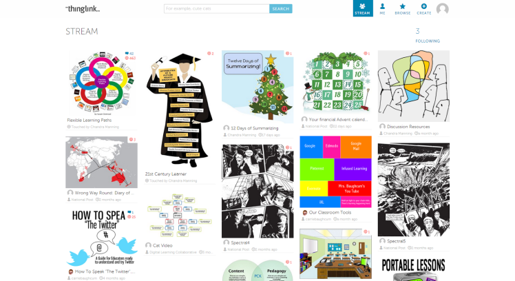

Что такое ThingLink? ThingLink - сервис, позволяющий превращать статические картинки в интерактивные объекты, где для каждого объекта на картинке можно выбрать и установить ссылку на веб-страницу, презентацию, видео и т.п.
Что можно создать с использованием этого сервиса:
создавать уроки для самостоятельного изучения учащимися;
интерактивный учебный плакат по изучаемой теме;
интерактивную обложку книги со ссылками на буктрейлер по книге, статью о писателе или поэте, электронную версию книги и т.п.;
интерактивный портрет со ссылками на биографию, созданные произведения (для писателей, поэтов) или сделанные открытия (для ученых);
интерактивные фотографии города со ссылками на статьи и фотографии достопримечательностей;
интерактивные фотографии природы со ссылками на статьи, видео и др. материалы о растениях и деревьях;
Логотип ThingLink

Пример работы в ThingLink
Главные преимущества ThingLink:
Для маркера есть возможность выбора иконки;
Можно добавлять комментарии и метки;
Учитель может скопировать себе понравившиеся интерактивные плакаты и редактировать их по своему усмотрению;
Создавать маршрут или интерактивную экскурсию.
Главные недостатки ThingLink:
Один язык поддержки — английский. Если вам это неудобно, включите в браузере автоперевод;
Ограничения на бесплатном тарифе. Если вы хорошо освоите этот сервис и решите использовать его в своей работе, стоит поговорить с главным редактором о возможности приобретения платной версии;
Не все опции интерфейса интуитивно понятны.
A подробное описание данной программы и как ею пользоваться можно посмотреть в видео ниже: